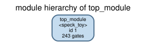
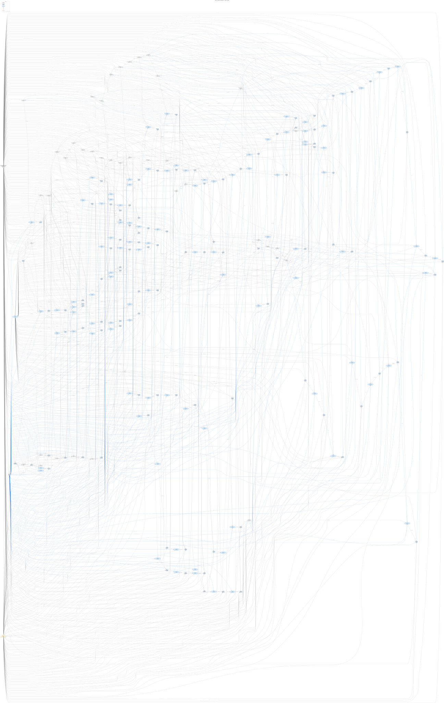
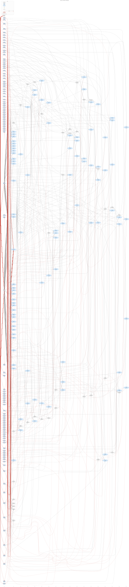
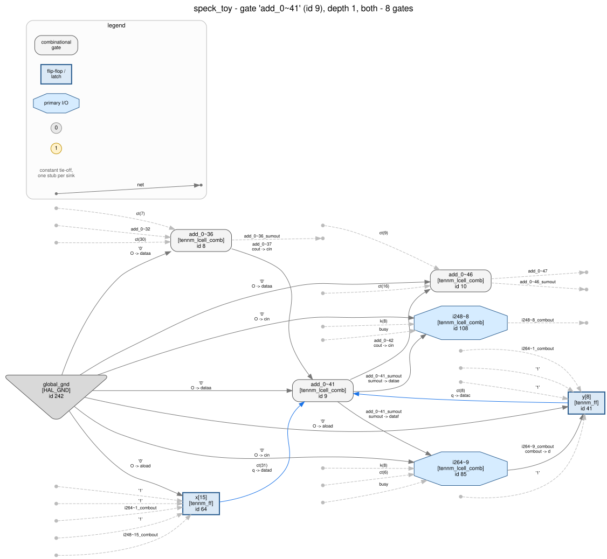
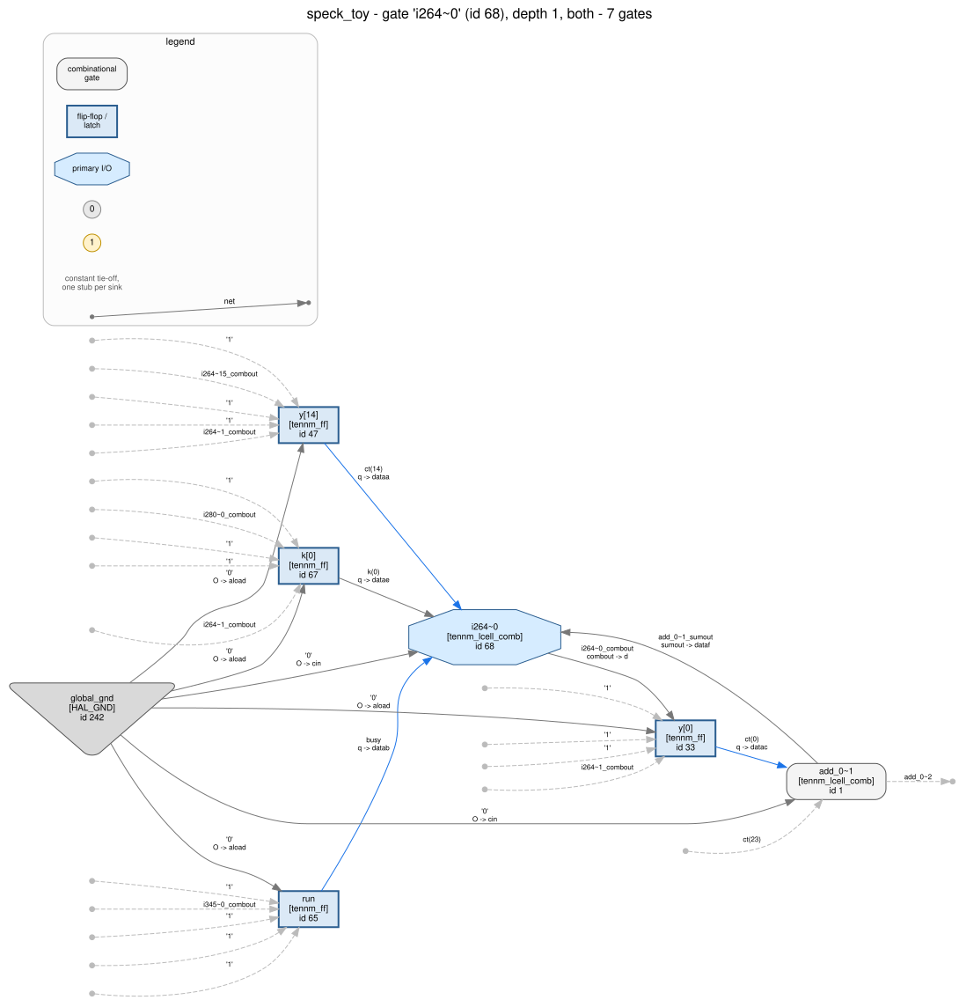

Walkthrough 11 — a Speck32/64 block cipher: finding an Add-Rotate-XOR round in a netlist that names neither the rotation nor the XOR.
lut_mask algebra — and now wants
the first design in the series that is actually cryptography. The lesson is not
"here is how Speck works". It is that a cipher's three defining operations
survive synthesis in three completely different states, and only one of them
looks like what you expect.
The rule this page follows: every number, every quoted output and every picture below was produced by the command printed above it, and check.py re-derives all of them. Where a tool got it wrong first, that is shown too — the failures are part of the lesson.
The target is Speck32/64, the smallest member of the SPECK family (Beaulieu, Shors, Smith, Treatman-Clark, Weeks and Wingers, IACR ePrint 2013/404): a 32-bit block, a 64-bit key, 22 rounds, encryption only, one round per clock cycle. spec.md states the intended behaviour and was written before synthesis; design.v is the RTL that was handed to Quartus. Read them now if you like, then forget them: from section 3 onwards the walk uses only the netlist.
The round function, with the block held as two 16-bit words and
k the round key:
x <- (ROR(x, 7) + y) mod 2^16 XOR k
y <- ROL(y, 2) XOR x (the *new* x)and the key schedule, which is the same shape with the round index injected where the key would be:
l_new <- (k + ROR(l0, 7)) mod 2^16 XOR i (i = 0..20)
k <- ROL(k, 2) XOR l_new
l0, l1, l2 <- l1, l2, l_newThree operations, three completely different fates on an FPGA:
tennm_lcell_comb cells in arithmetic mode wired
cout -> cin. Unmissable, and walkthroughs 01, 04 and 06
already taught how to read it.lut_mask, no net. It is invisible
to a gate census and it will not appear in any list of signals.So two thirds of the round function is not in the netlist as an object. That is the whole exercise.
The RTL is constrained so the whole post-synthesis netlist lands inside what
this repository has actually validated: one clock, no vendor IP, no RAM,
no DSP, no PLL, no instantiated IO buffers. Round keys are computed by a datapath
rather than stored in a table, which is what keeps a memory block out of it, and
every operation is a 16-bit add, a rotation or an XOR — a 16×16 multiply
would have gone to a DSP block and straight out of coverage. What is left is
tennm_lcell_comb and tennm_ff, the two primitives
plugins/gate_libraries/definitions/AGILEX_TENNM.hgl models.
The flow is the usual one, in a scratch directory holding a copy of
design.v and the project files from quartus/:
$ quartus_sh -t build.tcl
$ quartus_syn speck_toy -c speck_toy
...
Info (21057): Implemented 270 device resources after synthesis
Info (21058): Implemented 99 input pins
Info (21059): Implemented 34 output pins
Info (21061): Implemented 137 logic cells
Info: Quartus Prime Synthesis was successful. 0 errors, 1 warning
$ quartus_eda --simulation --format=verilog --tool=questasim \
--output_directory=simulation speck_toy -c speck_toy
Info (204019): Generated file speck_toy.vo in folder ".../simulation/"Two assignments in speck_toy.qsf are there
for coverage rather than for the design:
ALLOW_SYNCH_CTRL_USAGE OFF keeps the load selection out of the
flip-flop's sload/sclr pins (same reason as walkthrough
06), and AUTO_SHIFT_REGISTER_RECOGNITION OFF keeps the three-deep
l0 <- l1 <- l2 buffer out of a memory
block.
The first version of the RTL cleared the round counter from the load path. That made one next-state function read seven signals, and an ALM in the modelled configuration has six data pins. Quartus obliged by using the fracturable seven/eight-input mode, and the importer stopped:
$ python tools/hal_agilex import speck_toy.vo -o netlist.hal.v
import refused: instance i345~4 has inverted connections on datag, datah,
which do not address the LUT mask and cannot be absorbedextended_lut "on" with datag/datah
driven is a real ALM mode and a real thing silicon does — it is simply outside
the configuration tools/hal_agilex validated, so the importer
refuses rather than modelling it wrongly. The fix was not to force the tool: it
was to write the RTL so that no control cone needs a seventh input (a registered
pen flag, and a round counter that clears itself). The
coverage constraint shaped the design, which is worth knowing before you
build a walkthrough target, and the comment in
design.v says so at the point it matters.$ python tools/hal_agilex --strict inventory speck_toy.vo \
-o artifacts/inventory.findings.json
All 241 instances are tennm_ff (104) or
tennm_lcell_comb (137), each in a configuration the package models:
status proven_under_assumptions, in
artifacts/inventory.findings.json.
Every flip-flop has sclr, sclr1, sload and
aload tied to gnd, which is what the assignment above
bought.
$ python tools/hal_agilex behavior speck_toy.vo \
--reference reference.py --cycles 2000 \
-o artifacts/behavior_design.findings.jsonThis simulates the exported netlist with the modelled primitive semantics and compares all three outputs against reference.py, a plain-Python restatement of the RTL, every cycle: proven_bounded, 2000 cycles.
start is
pseudo-random every cycle and an encryption is uninterruptible once begun, so a
2000-cycle run contains 85 accepted starts and 81 complete 23-cycle
encryptions on random plaintexts and keys, spends 91% of its cycles
busy, and takes its two asynchronous clears (cycles 666 and 1333) in the middle
of an encryption rather than between two. A shorter run would exercise the deep
rounds thinly; a longer one adds encryptions, not coverage of new behaviour.$ export HAL_BASE_PATH=/work/build HAL_PY_PATH=/work/build/lib PYTHONPATH=/work/build/lib
$ cd <repo>
$ GL=plugins/gate_libraries/definitions/AGILEX_TENNM.hgl
$ EX=examples/agilex3_walkthroughs/11_speck_toy$ python $EX/analysis.py stats
{
"design_name": "speck_toy",
"gate_types": { "tennm_ff": 104, "tennm_lcell_comb": 137 },
"instances": 241,
"inputs": [ pt:32, start:1, clk:1, rst_n:1, key:64 ],
"outputs": [ ct:32, busy:1, done:1 ],
"declared_vectors": { "ct":32, "k":16, "key":64, "l0":16, "l1":16, "l2":16,
"pt":32, "rnd":5, "x":16, "y":16 }
}104 flip-flops is a hard upper bound on the state, and the declared vectors say how it is grouped: six 16-bit words and a 5-bit something, 96 + 5 = 101 bits, leaving three loose flags. A 32-bit input and a 32-bit output of the same width, plus a 64-bit input that is exactly twice that, is the port signature of a block cipher with a parallel key — but nothing here says cipher yet. A 64-bit-keyed CRC would look the same at this zoom.
137 ALMs for 96 bits of datapath is very little logic. Roughly one and a half cells per state bit means the next-state functions are shallow: no S-box, no multiplier, no wide comparator. That already rules out a substitution-permutation cipher, which needs a lookup table per nibble.
x, y, k, l0..l2
and rnd from the RTL. A hostile flow does not, and walkthroughs 02,
03 and 10 run their analyses on anonymised copies for exactly that reason.
Nothing below uses a name as evidence — the register
banks are recovered from q-vector membership, the rotations from
index arithmetic, the round count from a simulation — but the names do make the
JSON readable, and walkthrough 16 is where the same job gets done with them
gone.$ python tools/hal_viz module_tree "$EX/netlist.hal.v" -g "$GL" \
-o "$EX/images/module_tree.svg"
$ python tools/hal_viz netlist_graph "$EX/netlist.hal.v" -g "$GL" \
--module top_module --show-boundary --const-hub \
-o "$EX/images/netlist_graph.svg"
[hal_viz] wrote images/netlist_graph.dot (243 nodes, 942 edges)
HAL_GND and HAL_VCC gates HAL materialises on load.Can see: two long regular ladders running through the middle of the hairball, and a lot of parallel two- and three-input cells hanging off the registers. Regularity at this zoom means "bit-sliced datapath", which is worth knowing.
Cannot see: anything else. At 243 nodes this drawing is past the size where a human reads a circuit off it, which is precisely why the next section levels the same graph instead of staring harder at this one. The picture localises, the algebra decides.
“Two long regular ladders” is a claim about a graph, so make the graph explicit. Nodes are gates, edges are nets — one edge per driver → sink pair, from the output pin that drives a net to each input pin that reads it. That is all a netlist is, and steps 2, 3 and 4 below are graph algorithms over it.
It is not acyclic: the cipher state feeds itself every cycle. But in a synchronous
design every cycle passes through a register, so if you cut every edge that
lands on a flip-flop pin the cycles all vanish and what is left is a directed acyclic
graph — the combinational core. A DAG can be topologically levelled: level 0 is
everything with no remaining predecessor, level n is everything whose deepest
predecessor is at level n−1. hal_viz dag runs Kahn's
algorithm and draws each level as a column.
$ python tools/hal_viz dag "$EX/netlist.hal.v" -g "$GL" --const-hub \
-o "$EX/images/dag.svg" --html
18 topological levels, 413 edges cut at a
register. The standalone page with a legend and these counts is
images/dag.html; the DOT source is
images/dag.dot.The shape is the entire architecture, and it is readable straight off the column sizes:
add_0~1 and add_1~1), the shared clock-enable cell, three
flag cells, the five round-counter cells, and 32 cells that are nothing but load
multiplexers on two 16-bit banks — everything whose inputs are registers only.A levelled DAG shows where the logic is; it does not show what runs through it.
hal_agilex trace records every net of a bounded, seeded window of the same
simulator the behaviour check uses, and hal_viz clock_step joins that trace
to the drawing above:
$ python tools/hal_agilex trace "$EX/speck_toy.vo" \
--reference "$EX/recovered_reference.py" --cycles 25 \
--hold start=1 --hold pt=0x6574694c --hold key=0x1918111009080100 \
-o "$EX/artifacts/dag_trace.json"
$ python tools/hal_viz clock_step "$EX/images/dag.svg" \
--trace "$EX/artifacts/dag_trace.json" \
-o "$EX/images/dag_interactive.html"images/dag_interactive.html
is one self-contained page: prev/next, a scrubber, play/pause, nets coloured by value.
The window is a whole encryption of the published test vector — cycle 0 is the
asynchronous clear, cycle 1 the load, cycles 2–23 the 22 rounds, and at cycle 24
done is high and ct reads 0xa86842f2. Stepping it
is the fastest way to see what steps 3–5 argue: the carry ripples left to right
through one column per level inside a single cycle, and the whole 96-bit state changes
at once at the register boundary.
Constants are drawn as one shared hub, not as one
0/1 stub per consuming pin. The default spelling is better
on a small design and it is what the other guides show; here the constant fan-out is
1514 consuming pins, which turns level 0 into a wall of 1514 circles, the file into
1.7 MB and the Graphviz layout into eight minutes. Both spellings of the same
graph are one flag apart — drop --const-hub from the command above to see
the other one, and the header of the emitted .dot then reports 1514
tie-off stubs and 936 cut edges instead of 413 (the extra 523 are the flip-flops'
constant control pins, which the hub form draws once each).
Primary inputs are still not nodes. They
have no driving gate, so nothing can draw an edge from one: pt,
key, start, the clock and the reset are all absent, and a
cell's drawn fan-in is a lower bound on its real fan-in.
Each step is one command, the output it printed, and the reasoning that turns that output into a conclusion. The commands are subcommands of analysis.py, which contains no knowledge of the design: the rotation amounts, the word width, the round count and the port roles are all derived, and the script fails loudly rather than assuming if the structure does not fit.
Five inputs, three outputs. Which is the clock? You never guess this — you
look at which pins a net reaches. The gate library says
tennm_ff.clk is a clock pin, .clrn an asynchronous
active-low clear and .ena a clock enable, and that is device
knowledge, not design knowledge.
$ python $EX/analysis.py registers
{
"flip_flops": 104,
"enable_groups": [
{ "clk": "clk", "clrn": "rst_n", "ena": "i264~1_combout", "size": 96 },
{ "clk": "clk", "clrn": "rst_n", "ena": "run~q", "size": 5 },
{ "clk": "clk", "clrn": "rst_n", "ena": "1", "size": 3 }
],
"q_vectors": { "k":16, "l0":16, "l1":16, "l2":16, "rnd":5, "x":16, "y":16 }
}One clock and one asynchronous clear, both reaching all 104 flip-flops and nothing else. Single-domain, so there is no CDC problem to chase, and the clear is active-low and asynchronous because the primitive says so. Two of the five inputs are now pinned down with no ambiguity at all.
Three enable groups, and they are the architecture. 96 bits
move together — that is the six 16-bit words, one object. Five bits move on a
different enable, and that enable is the q of a single flip-flop,
which is the signature of a counter gated by a run flag. Three bits have no
enable at all: free-running flags. A design with one enable group would have told
you far less.
The three remaining inputs (start, 32 bits
and 64 bits) touch no control pin; they only feed ALM data inputs. They are
payload. At this point all you are entitled to say is "payload".
The q vectors above already give the cut: six 16-bit banks, a
5-bit counter, three flags. Everything else in the netlist is combinational logic
between banks, and the rest of the walk is about reading it.
The independent confirmation comes from a different reader and a different graph algorithm — HAL's own:
$ python $EX/analysis.py hal # needs a built HAL
{
"gate_library": "AGILEX_TENNM", "gates": 243, "nets": 372, "modules": 1,
"elaborated": 137, "refused": [],
"components": [
{ "size": 144, "gate_types": {"tennm_ff": 64, "tennm_lcell_comb": 80},
"registers": { "k": 16, "l0": 16, "l1": 16, "l2": 16 } },
{ "size": 80, "gate_types": {"tennm_ff": 32, "tennm_lcell_comb": 48},
"registers": { "x": 16, "y": 16 } },
{ "size": 14, "gate_types": {"tennm_ff": 7, "tennm_lcell_comb": 7},
"registers": { "pen": 1, "rnd": 5, "run": 1 } },
{ "size": 2, "gate_types": {"tennm_ff": 1, "tennm_lcell_comb": 1},
"registers": { "fin": 1 } } ]
}Nothing was refused. Every ALM got a Boolean function
attached from its lut_mask, and every flip-flop's pin configuration
is inside the validated coverage. That matters: an ALM outside coverage gets
no function rather than a plausible-looking wrong one, and every piece
of algebra below would then be standing on a free variable. A zero here means the
next five steps are standing on modelled semantics all the way down.
The four strongly connected components are the four architectural
objects, and nobody told the graph_algorithm plugin what
any of them were. A combinational circuit is a DAG, so every cycle in the gate
graph is a value feeding its own future; grouping by mutual reachability
partitions the design for free. Here: 64 registers in one loop, 32 in another, a
7-bit machine, and a lone flag.
And the split itself is information.
The two big components are separate, which can only mean the coupling between
them is one-way. Work out which way: the 64-register component would have to be
reachable from the 32-register one for them to merge, and it is not — so
the 64-bit object feeds the 32-bit object and never reads it back.
A 64-bit state that autonomously drives a 32-bit state is the shape of a key
schedule driving a data path, and that hypothesis was available here, at step 2,
before a single lut_mask had been read. Step 7 confirms it from the
logic.
A carry chain is the one structure you never have to guess at: a net leaving
tennm_lcell_comb.cout and entering another cell's cin
is dedicated silicon, not a heuristic. hal_crypto.arith walks them
and then does not stop at the pattern — it evaluates each chain against
a + b + cin before calling it an adder.
$ python $EX/analysis.py chains
{
"chains": 2,
"adders": [
{ "cells": ["add_0~1", ... 16 slices ... , "add_0~76"],
"operation": "add", "verified_bits": 15, "carry_in": 0,
"checked_vectors": 256, "exhaustive": false,
"operands": {
"first": { "vector": "x", "declared_width": 16,
"rotation": { "rotation": 7, "rotate_left_by": 9,
"bits_observed": 15 } },
"second": { "vector": "y", "declared_width": 16, "rotation": null } } },
{ "cells": ["add_1~1", ... , "add_1~76"],
"operation": "add", "verified_bits": 15, "carry_in": 0,
"operands": {
"first": { "vector": "k", "rotation": null },
"second": { "vector": "l0", "rotation": { "rotation": 7, ... } } } }
]
}
hal_viz netlist_graph --gate add_0~41 --depth 1 --pin-labels.
Slice 8 of the data-path chain. Its two data pins read y[8] and
x[15]; 15 = (8 + 7) mod 16.Two 16-bit adders, verified, not pattern-matched. Both have a carry-in of 0, so neither is a subtractor and neither is an increment. Two structurally identical adders side by side, running every cycle, is already a strong hint of a datapath and its twin.
The rotation is the operand order. Slice i of a
carry chain computes bit i of the sum, so whatever net arrives at slice
i is bit i of the operand — and slice i here reads
x[(i + 7) mod 16], for every i. That is
ROR(x, 7) written in wiring. There is no signal called
x_rot in this netlist and there never was one: rotating a word costs
nothing, so the synthesiser kept nothing. The only place alpha exists is
the order of the pins.
Both chains do it, with the same 7 — the data path on
x, the second chain on l0. The other operand of each
chain (y, k) is straight wiring.
cout goes nowhere, so
Quartus zeroed it — and arith classifies operand pairs from
both mask halves, so it declines to call that slice an adder slice and
treats it as the trailing carry tap. Its sum bit is real and its operands are
visible in the export (!y[15] ^ (!x[6]), and
6 = (15 + 7) mod 16), but the tool does not count it, so neither does
this page: the rotation below is fitted against the declared 16-bit width
with 15 of 16 positions observed, and bits_observed says so. Also
note exhaustive: false — 32 operand bits is too many to enumerate, so
the addition was checked on 256 seeded vectors, and the finding says
heuristic rather than proven.Speck's second rotation never reaches an adder — it goes straight into an XOR
— so step 3 cannot see it, and neither can a search for permuted vectors,
because there is no vector. What there is: bit i of the
y bank is XORed with bit i − beta of the
same bank, so bit i's next-state cell reads exactly one bit of
its own bank, and the index map is the rotation.
$ python $EX/analysis.py banks
{ "rotations": [
{ "source": "k", "destination": "register bank k next-state fan-in",
"width": 16, "rotation": 14, "rotate_left_by": 2, "bits_observed": 16 },
{ "source": "y", "destination": "register bank y next-state fan-in",
"width": 16, "rotation": 14, "rotate_left_by": 2, "bits_observed": 16 } ] }
hal_viz netlist_graph --gate i264~0 --depth 1 --pin-labels.
The next-state cell of y[0]. Of the whole y bank it
reads exactly one bit — y[14] — and
14 = (0 − 2) mod 16."Exactly one" is what makes this a rotation and not a cone.
If bit i's next state read three bits of its own bank you would have a
linear feedback function, not a rotation, and the map would not be a function of
the index. The x bank fails this test — no x register
reaches an x next-state cell directly, because they all go through
the carry chain first — and that asymmetry between the two halves of the block is
itself the ARX round: one half is rotated into an adder, the other is rotated
into an XOR.
Two spellings, both reported. rotation: 14 is
dest[i] = src[(i + 14) mod 16]; rotate_left_by: 2 is the
same wiring described as "rotate the source left by 2". The literature uses both
and confusing them is an easy way to publish a wrong constant, so the finding
never picks one.
The key register does it too, with the same 2. Two banks rotated by beta, two chain operands rotated by alpha: whatever this design is, it applies the same round function twice.
An ARX round needs an XOR layer on top of the adder. Look for cells whose own LUT function is a pure XOR of their inputs and you find none — not one cell in 137. The layer is there anyway:
$ python $EX/analysis.py xor
{
"xor_cells": 54, "standalone": 0, "conditional": 54,
"cofactors": { "run~q=1": 53, "pen~q=0": 1 },
"arities": { "2": 33, "3": 21 },
"examples": [
{ "cell": "i264~0", "inputs": ["y[14]", "k[0]", "add_0~1_sumout"],
"cofactor": { "net": "run~q", "value": 1 } }, ... ]
}Why there are no XOR cells. The register's next state is
load ? port_bit : (sum ^ k). That is four inputs; an ALM has six.
There is no reason on earth for a synthesiser to spend a second cell on the XOR
when the multiplexer's cell has room, so it does not, and the resulting function
is a multiplexer — degree 2, not affine, not an XOR of anything.
How to get the XOR back. Hold one input at a constant and
look again. With run = 1 the load path is not selected, and 53 of
the 54 cells collapse to a pure XOR over the remaining inputs — 33 of them
two-input, 21 three-input. That is not a fit or a guess: it is the cell's own
truth table, restricted, and the restriction is exact.
Read the arities. 33 two-input XORs
and 21 three-input ones is the round drawn in cell counts:
sum ^ k is two inputs, and
ROL(y,2) ^ (sum ^ k) collapsed into one cell is three. The example
above is exactly that: i264~0 XORs y[14],
k[0] and the chain's bit-0 sum, which is
y[0] <- ROL(y,2)[0] ^ x_new[0] with x_new substituted
in. One cell, the whole second line of the round function.
The round count is not a structural fact you can read off a cell. It is a
property of the control machine, and the honest way to get it is to run the
netlist and watch. analysis.py's encrypt
step drives the export as a black box with the modelled primitive semantics:
assert start for one cycle, then clock until done
rises, recording the counter each cycle.
$ python $EX/analysis.py encrypt
{
"cycles_from_accepted_start_to_done": 23,
"busy_cycles": 22,
"round_counter_range": [0, 21],
"rounds": 22,
...
}busy high, and the 5-bit counter
sweeps 0 through 21 and returns to 0. 22 rounds, measured. A
5-bit counter could have gone to 31; the terminal value is a property of the
comparison cell, and reading it out of the logic would have worked too — but
running it is cheaper, is independent of every structural claim made so far, and
cannot be fooled by misreading a mask.Steps 3–5 found two identical round structures. Something has to distinguish them, and it is not size or shape — it is what gets XORed in.
Step 2 already gave the direction — {k, l0, l1, l2} is its own
strongly connected component and {x, y} is another, so the first
drives the second and never reads it back. This step says why the first
one is a schedule rather than just another cipher.
The data-path chain adds ROR(x,7) to y and its XOR
layer reads the k bank: a round key. The second chain adds
ROR(l0,7) to k, and its XOR layer reads the
round counter on five bits and nothing on the other eleven. A word that
is the counter, zero-extended, is a round index, not a key: the eleven
untouched bits are the tell, because a key would touch all sixteen. That
asymmetry is the key schedule's fingerprint and it is visible in nothing but the
fan-in of five cells.
The rest of the schedule is the plainest wiring in the
design: l0's next state is l1 and l1's is
l2, bit for bit, through nothing but a load multiplexer — the 32
cells that made level 1 of the DAG so wide. A three-deep buffer feeding a round
function, with the fourth word being the live key, is a four-word key schedule.
64 bits of key, which is what the key port is.
Everything so far is internal: the netlist agreeing with a model derived from the netlist. The last step reaches outside. The SPECK paper publishes one test vector for Speck32/64, and the recovered round function says this design should reproduce it.
$ python $EX/analysis.py round
{
"word_bits": 16,
"alpha_right_rotation": 7,
"beta_left_rotation": 2,
"rounds": 22,
"adders": 2,
"xor_cells": 54,
"standalone_xor_cells": 0,
"round_function": "x <- (ROR(x, 7) + y) mod 2^16 XOR k ; y <- ROL(y, 2) XOR x",
"key_schedule": "l <- (k + ROR(l0, 7)) mod 2^16 XOR i ; k <- ROL(k, 2) XOR l",
"matches_published_vector": true
}
$ python $EX/analysis.py encrypt
{ "plaintext": "0x6574694c",
"key": "0x1918111009080100",
"ciphertext": "0xa86842f2",
"published_ciphertext": "0xa86842f2",
"matches_published_vector": true, ... }Everything above was done by hand, with general-purpose tools.
tools/hal_crypto asks the same questions automatically over six
passes and writes one findings document:
$ python tools/hal_crypto identify $EX/speck_toy.vo -o artifacts/identify.findings.jsonhal_crypto/identify/family heuristic Structural family: arx
"The six passes agree on 'arx'. Families with evidence: arx. Every line of the
evidence list below is a structural observation; none of them names an algorithm."
confidence_tier: high
evidence:
- "2 verified adder(s), 4 fixed rotation(s) and 54 XOR cell(s) (0 standalone),
wired into a round"
- "the rotation amounts include the published set of speck_32"
hal_crypto/identify/classical-vs-pqc heuristic Classical / PQC style: classical-style
"The structures found (arx) are the ones classical symmetric primitives are built
from, and no lattice/ring arithmetic was found. This does NOT rule out
post-quantum cryptography: a hash-based or code-based scheme contains neither
NTTs nor S-boxes and would come back none-detected here."
hal_crypto/arx/round heuristic Add-Rotate-XOR round structure
rotation_families:
- name: speck_32 amounts: [7, 2] word_bits: 16
reference: "SPECK-32/64 round rotations alpha=7, beta=2 (Beaulieu et al., 2013)"family: arx means the three ingredients were
found and found wired to each other — the XOR layer reads the adder's
sums and the rotations are on the adder's operands. An adder alone is not ARX
(walkthrough 01's counter comes back none-detected, and the
counter8 fixture exists to keep it that way).
speck_32 is a statement about four numbers. It
says the rotation amounts found in this wiring include the published SPECK-32/64
set, alpha 7 and beta 2, at a 16-bit word. It does not say the design is
SPECK, and the finding never uses that sentence. Any cipher rotating 16-bit words
by 7 and 2 would match, and the match is only as strong as the library it is
matched against.
classical-style does not rule out
post-quantum. It means the structures present are the ones classical
symmetric primitives are built from. A hash-based signature scheme has neither
NTTs nor S-boxes and would come back none-detected — that caveat
ships in the finding text, not just here.
Run against the version of hal_crypto that shipped with issue #77,
this netlist came back none-detected:
ARX: no fixed rotation in the wiring between banks;
only 0 pure-XOR cell(s); a layer starts at 4Both halves of that were correct observations and the wrong conclusion. The
rotation pass looked for a permuted vector — a named signal carrying the
rotated word — which is how the hand-built arx_round8 fixture spells
it and how a Quartus export never does. The XOR pass looked for standalone XOR
cells, which a loadable cipher core does not have. The synthesized fixture had
been passing for the shape it was built from rather than the shape silicon
produces.
The fix is the two readings this walkthrough used in
steps 3, 4 and 5 — rotations off the order an ordered cell layer reads a bank,
XORs under one held input — and each is reported with the weaker provenance it
has (read_from, conditional). Landing an example that
breaks the tool is the point of a walkthrough series; see
tools/hal_crypto/fixtures/GROUND_TRUTH.md, which now carries this
export as the case the synthesized fixtures cannot make.
recovered.v is the RTL written from the netlist alone, with every line carrying the observation it came from, and recovered_reference.py is its Python restatement. Feeding the second one back at the export closes the loop:
$ python tools/hal_agilex behavior $EX/speck_toy.vo \
--reference $EX/recovered_reference.py --cycles 2000 \
-o artifacts/behavior_recovered.findings.json
-> proven_bounded, 2000 cyclesA green bounded check on its own proves nothing, so both recovered rotation constants get moved by one and the check has to catch them:
| control | what changed | result |
|---|---|---|
| alpha8 | ALPHA = 7 → 8 |
bounded_counterexample, diverges at cycle 3 |
| beta3 | BETA = 2 → 3 |
bounded_counterexample, diverges at cycle 3 |
ct is the block register and is driven continuously: a wrong
rotation changes the state on the very first round and the comparison sees it
immediately. Contrast walkthrough 08, whose off-by-one clamp survived 200 cycles
and only failed at 280 — there the wrong behaviour lived in a corner of the state
space that a short run never reached. An easily-caught control means the
observable is good, not that the check is weak; the thing that would
worry you is a control that passes.| Fact | Evidence |
|---|---|
| Six 16-bit register banks, a 5-bit counter, three flags; one clock, one async active-low clear, three enable groups | q-vector membership and the flip-flops' own control pins (step 1); the tennm_ff model supplies the clear's polarity and timing |
| Two verified 16-bit adders on the dedicated carry chain | the cout -> cin walk, then 256 seeded operand vectors evaluated against a + b + cin (step 3) |
| alpha = 7, a right rotation | slice i of both chains reads bit (i + 7) mod 16 of a 16-bit bank (step 3) |
| beta = 2, a left rotation | bit i of the y and k banks reads bit (i - 2) mod 16 of itself (step 4) |
| An XOR layer of 54 cells over the sums | each cell's own truth table, restricted to run = 1 (step 5) |
| 22 rounds, 23 cycles from an accepted start | driving the netlist and watching the counter and the flags (step 6) |
| Which chain is the key schedule | its XOR layer reads the round counter on five bits and nothing on the other eleven (step 7) |
| It really computes Speck32/64 | the published vector, through the netlist (step 8), plus 2000 cycles against the recovered model with two negative controls (this section) |
| Lost | Why, and what you can do about it |
|---|---|
The rotations as objects. No net, no cell, no
lut_mask bit carries ROR(x,7). |
They are recoverable only as index arithmetic over an ordered layer, and only because the layer is ordered (a carry chain by its carries, a register bank by its bit indices). Scramble the bit indices — which anonymisation does — and you recover the rotation only up to the unknown bit permutation. That is the honest limit, and walkthrough 16 is where it bites. |
| The XOR layer as a layer. 54 cells, none of them an XOR. | Recovered by cofactor, and reported as conditional for the
rest of its life. Any tool that reports "54 XOR cells" without that
qualifier is telling you something false. |
Every name. speck_toy, ALPHA,
ROUNDS, the port names. |
Quartus kept most of them here and a hostile flow would not. Nothing in this walk used one as evidence; you name things after what you proved they do. |
| Hierarchy. The export is one flat module. | The datapath/key-schedule split was rebuilt from the two chains and what their XOR layers read. That is a reconstruction, not a recovery, and should be labelled as one. |
Coding style. design.v writes the
round with named intermediate wires; recovered.v writes it
differently. |
They synthesise to the same cells. The netlist is an equivalence class and every member of it is an equally correct answer. |
| That the design is a cipher at all, as opposed to cipher-shaped. | Structure gives you "ARX round, alpha 7, beta 2, 22 rounds". That it is SPECK comes from matching a published constant set and a published test vector — from the literature, not from the netlist. State the structure; cite the match; do not merge the two. |
| Any security property. | Nothing here is a claim about masking, constant time, fault resistance or key handling. This core presents its key on a parallel port. |
design.v (ALPHA = 9, say), redo section 2, and watch
steps 3 and 4 report the new amounts without a single change to the analysis —
and watch hal_crypto identify stop matching speck_32
while still saying arx. That is the test of whether a recovery
script derives things or recognises them.hal_crypto's ARX pass will correctly
say not-arx with "no carry-chain adder" as the reason.tools/hal_findings document with an explicit
status. artifacts/report.html renders the
ones this walkthrough produced onto one offline page — that is the format an RE
result should be delivered in, because it forces every claim to say how strong it
is.# synthesis (needs Quartus Prime Pro 26.1 with Agilex 3 support)
$ mkdir scratch && cd scratch
$ cp ../design.v ../quartus/speck_toy.qpf ../quartus/speck_toy.qsf ../quartus/build.tcl .
$ quartus_sh -t build.tcl
$ quartus_syn speck_toy -c speck_toy
$ quartus_eda --simulation --format=verilog --tool=questasim \
--output_directory=simulation speck_toy -c speck_toy
# analysis (needs a built HAL and Graphviz)
$ export HAL_BASE_PATH=/work/build HAL_PY_PATH=/work/build/lib PYTHONPATH=/work/build/lib
$ sh examples/agilex3_walkthroughs/11_speck_toy/run_analysis.sh
# just the assertions -- the first form needs nothing but Python 3
$ python examples/agilex3_walkthroughs/11_speck_toy/check.py
$ python examples/agilex3_walkthroughs/11_speck_toy/check.py --with-hal